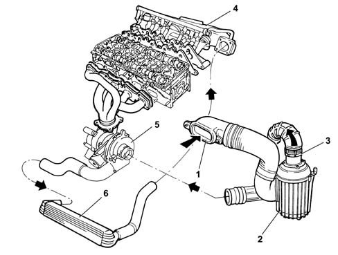

Composition
- Path
- Descriptions > 10 ENGINE > 1048 ENGINE AIR SUPPLY CIRCUIT > Composition
- Kind
- system description
- Applies to
- engines: 2.0 TB; all production periods
- Interactive page
- https://sloeber94.github.io/elrnDB-lThss/en/#/616653
Applies to: engines: 2.0 TB; all production periods
STRUCTURE
AIR SUPPLY SYSTEM.

- 1 - Cold air intake.
- 2 - Air cleaner assembly.
- 3 - Air flow meter with built-in intake air temperature sensor [DF1056].
- 4 - Intake manifold.
- 5 - Turbocharger.
- 6 - Intercooler.